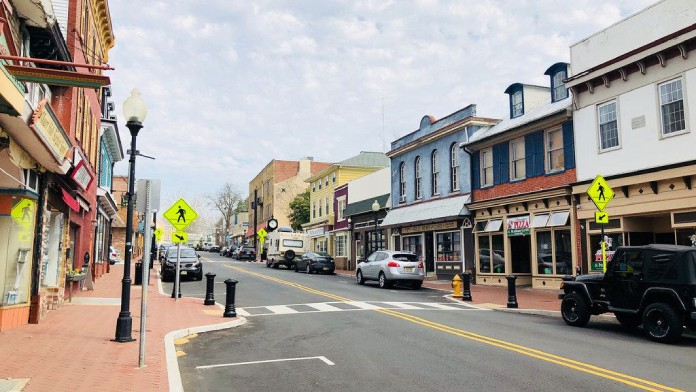

Burlington County is the largest county in New Jersey by area.
The county seat is Mount Holly.
English Quakers Settled here in 1677, almost a hundred years before the US became a nation

Read more on Wikipedia.